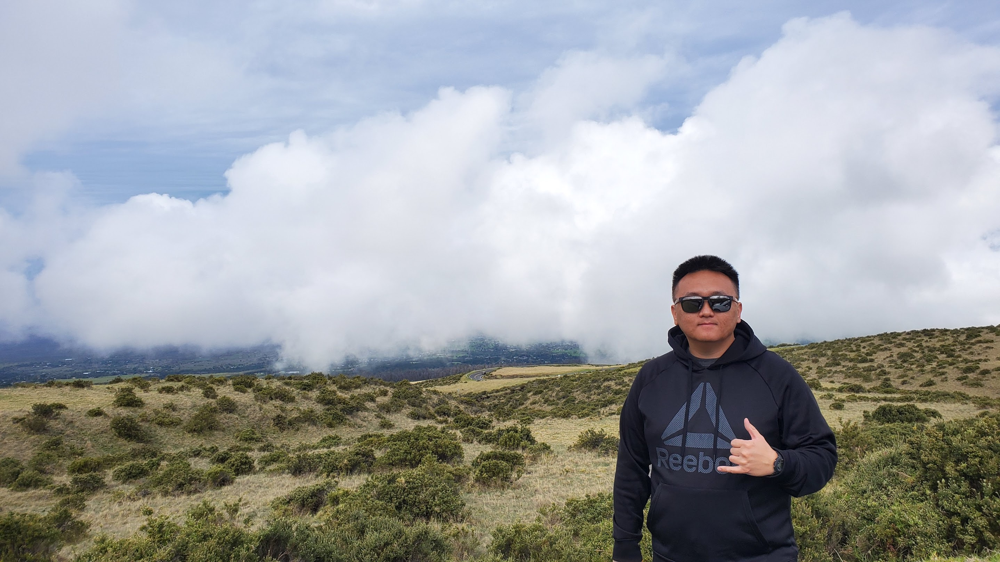

Overlooking Haleakalā National Park in Maui, Hawaii
Future software & web developer
“Yesterday is not ours to recover, but tomorrow is ours to win or lose.” – Lyndon B. Johnson
Experiences: I have worked as a social worker and interpreter for all of my professional career. For almost a decade, I was content, but that wasn't enough for me. My desire to be a software developer grew increasingly over the years, but 4-5 years of schooling was not realistic. My wife, daughter, and son depended on me and I couldn't just let them down. After several years of saving for a house, I came across DevCode and knew this was the perfect oppertunity to finally achieve my dreams of being a developer. There is no turning back from here on out!
“Yesterday is not ours to recover, but tomorrow is ours to win or lose.” – Lyndon B. Johnson